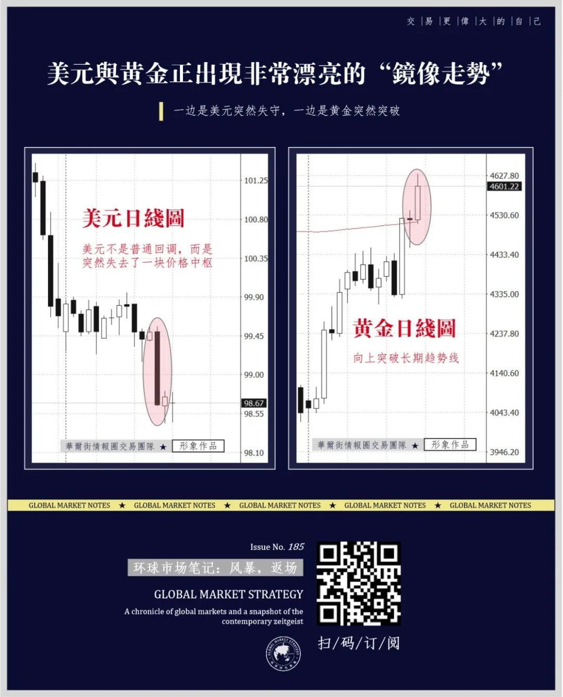
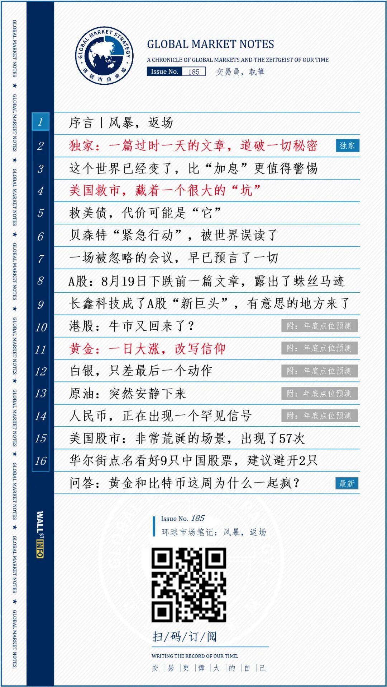

| 周五的交易大厅，屏幕还亮着，市场也涨着，但交易大厅里没有人敢笑。
——紧绷、迟疑、所有人都在等下一声警报。
交易員，執筆
周五的收盘，又给世界留下一个大大的问号：
- 美国股市全线上涨，涨幅不算小——道琼斯指数涨0.98%，标普500指数涨0.43%，纳斯达克指数涨0.43%。
很多人看到这个涨幅，松了一口气，但看债券市场完全是另一幅景象。美国国债市场的抛售仍然没有停止，10年期美债收益率升至4.73%，30年期美债收益率升至5.27%——贝森特干预带来的缓和几乎已经被债市全部收回。奇怪的是，周五这种压力暂时没有继续向股市传导。周五到底是股票看对了，还是债券看对了？下周必然有一个市场要纠错。
昨晚“贝森特”并没有出现在新闻快讯中，交易员们一直猜测他的下一步行动。华尔街也给了贝森特本周的行为一个定性——干预，对市场来说这并不是一个好词。如果债券市场继续向贝森特施压，问题最终可能被推到美联储门口。
特朗普在登上“空军一号”前回答了记者提问，他表示没有指示贝森特干预债市。“贝森特是个“非常能干的人”，对债券和利率“天生有着非常好的直觉。”
很多人最担心的反而是美元，预感当前是“美元贬值前夜”。一些分析师担心，下周的杰克逊霍尔全球央行年会，可能引发美元贬值。
布鲁金斯学会高级研究员罗宾·布鲁克斯表示，美国的这一举动是迄今为止“最明显的迹象”，表明美国正在效仿日本，让本币贬值。此举是在“玩火”。一旦货币进入贬值螺旋，就几乎不可能稳定下来。
但我们感觉这更像是“着火前夜”，因为不知道最后哪儿着火，可能是美元，可能是长债，可能是股票估值，甚至可能是美联储信誉。

黄金已经悄无声息站上4600美元，比特币一周涨了20%以上，以太坊甚至涨了接近30%。与此同时，4.70%以上的10年期美债收益率和90美元以上的油价也都同时出现，又让这个故事变得更危险了。美国国债、美元、黄金和股票都面临重大重新定价。
下周需要验证三组信号：
其一，如果美债收益率涨，美元还会不会跌？
其二，如果油价涨，黄金还能不能涨？
其三，美股跌的时候，美债到底涨不涨？这甚至比美股本身重要。
我们正式发布了《环球市场笔记：风暴，返场》，一些原本已经被市场认为“结束了”的问题，又回来了。
1、黄金大涨一日，改写了市场信仰。我们提前计算出了年底金价点位，最高会涨到哪，最低又会涨到哪？这里有明确的数字。
2、港股牛市又回来了？白银爆发在即？原油会不会突破100美元？请看我们的分析。本期报告另附A股、港股、黄金、白银、原油、人民币年底前点位预测。
3、美国救市，藏着一个很大的“坑”，接下来会发生什么？有一个市场会“被牺牲”。
4、8月19日A股下跌前一篇文章，露出了蛛丝马迹，由此我们推导出未来A股的走势路径，接下来会有“四个标准动作”。
可识别下方图片二维码，或点击文末“阅读原文”订阅。
